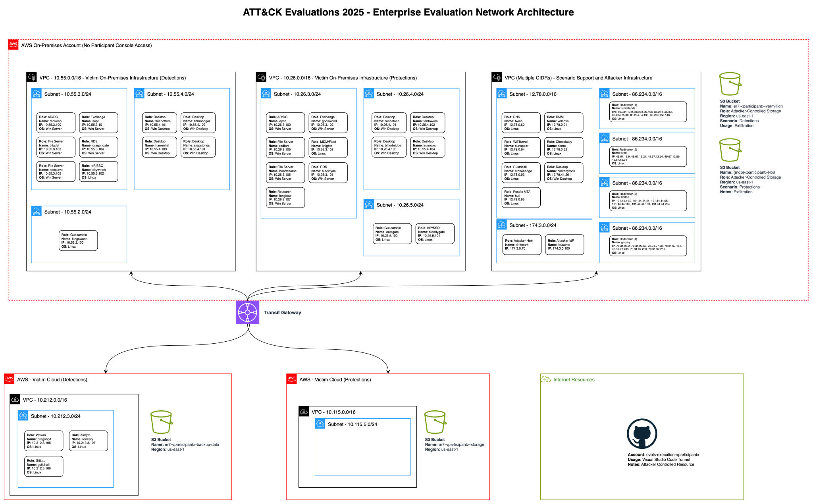

#
Infrastructure for ATT&CK Evaluations — Scattered Spider & Mustang Panda (2025)
Note: During development, the threat actors were referred to by the codenames "Demeter" (Scattered Spider) and "Hermes" (Mustang Panda). These codenames may still appear in internal documentation and configuration files outside of this public release.
Please see Getting Started for prerequisites, tooling, and setup guidance for the emulation of Scattered Spider and Mustang Panda.
Intermediate understanding of Terraform, Ansible, AWS, and AWS Billing are considered prerequisites to deploy the infrastructure configuration.
#
Providers
NOTE: Access to at least two AWS accounts is required:
aws.default— an AWS account with cross-account permissions, where on-prem scenarios are emulated.aws.cloud— an AWS account with organizations permissions, where cloud-based scenarios are emulated.
Alternatively, you can deploy the infrastructure with existing Detections/Protections accounts:
aws.default— an AWS account for emulating on-prem scenarios, with cross-account permissions intoaws.cloud-detectionsandaws.cloud-protections.aws.cloud-detections— an AWS account for emulating cloud-based Detections scenarios.aws.cloud-protections— an AWS account for emulating cloud-based Protections scenarios.
Please see the orgs deployment for approaches to AWS Organizations & Accounts.
#
Infrastructure Overview
The infrastructure below was staged for both Scattered Spider & Mustang Panda (2025).
Initial infrastructure was setup using Terraform, with configurations applied via scripts and configuration files. Please see the Deployment Overview and Configuration Overview for technical documentation.
For an overview of traffic redirection used for obfuscation during emulation of Scattered Spider and Mustang Panda adversaries, please see Traffic Redirection.
Infrastructure for ATT&CK Evaluations — Scattered Spider & Mustang Panda (2025) Scenario Domains & Hosts Detections Domain — kingslanding[.]netDetections On-Premises Detections Cloud
Protections Domain — vale[.]netProtections On-Premises Protections Cloud
Support and Red Team Hosts External Benevolent Hosts Red Team Hosts
Network Diagram
#
Scenario Domains & Hosts
This document provides an overview of the infrastructure support used for the evaluation. In addition to setup and configuration of virtual machines, this document covers infrastructure support services — such as domain name services (DNS), mail, and traffic redirection — used to support the evaluation. Support services are used throughout the evaluation for resource efficiency.
The Game of Thrones television series inspired the naming scheme for this evaluation's infrastructure.
Enterprise 2025 infrastructure consists of an organization with on-premises resources and an AWS-provided cloud environment, with network isolation into two environments for Detections and Protections.
#
Detections Domain — kingslanding[.]net
The Detections domain kingslanding[.]net contains fourteen (14) virtual machines.
#
Detections On-Premises
The Detections On-Prem environment consists of eleven (11) virtual machines joined to the kingslanding[.]net Active Directory domain.
Detections On-Prem resources are provisioned under aws.default
DMZ Subnet — 10.55.2.0/24
Servers Subnet — 10.55.3.0/24
Desktops Subnet — 10.55.4.0/24
#
Detections Cloud
The Detections Cloud environment consists of three (3) virtual machines joined to the kingslanding[.]net Active Directory domain.
Detections Cloud resources are provisioned under aws.cloud-detections
Servers Subnet — 10.212.3.0/24
#
Protections Domain — vale[.]net
The Protections domain vale[.]net contains twelve (12) virtual machines.
#
Protections On-Premises
The Protections On-Prem Scenario consists of twelve (12) virtual machines joined to the vale[.]net Active Directory domain.
Protections On-Prem resources are provisioned under aws.default
Servers Subnet — 10.26.3.0/24
Desktops Subnet — 10.26.4.0/24
DMZ Subnet — 10.26.5.0/24
#
Protections Cloud
Subnet — 10.115.5.0/24
The Protections Cloud Scenario does not involve any EC2 hosts.
Protections Cloud resources are provisioned under aws.cloud-protections
#
Support and Red Team Hosts
The following hosts are dedicated to networking support and red team use.
#
Validation Hosts
The hosts below are used to perform validation on victim infrastructure in each scenario domain.
#
External Benevolent Hosts
The hosts below are not accessible by evaluation participants.
Support Subnet — 12.78.0.0/16
Redirector Subnet — 86.234.0.0/16
For more about redirection, please see Traffic Redirection.
#
Red Team Hosts
The hosts below are not accessible by evaluation participants.
#
Network Diagram
The diagram below shows the layout of all victim hosts, attack platform, and support hosts.

#
Notice
© 2025 MITRE. Approved for public release. Document number 25-2969.
Licensed under the Apache License, Version 2.0 (the "License"); you may not use this file except in compliance with the License. You may obtain a copy of the License at
http://www.apache.org/licenses/LICENSE-2.0
Unless required by applicable law or agreed to in writing, software distributed under the License is distributed on an "AS IS" BASIS, WITHOUT WARRANTIES OR CONDITIONS OF ANY KIND, either express or implied. See the License for the specific language governing permissions and limitations under the License.